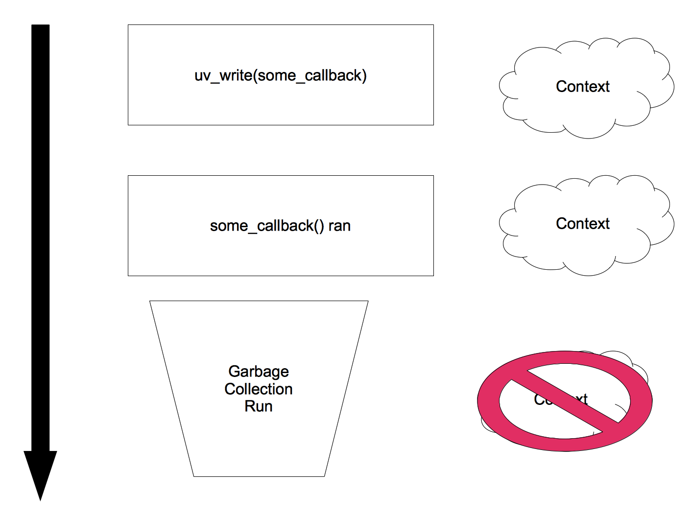
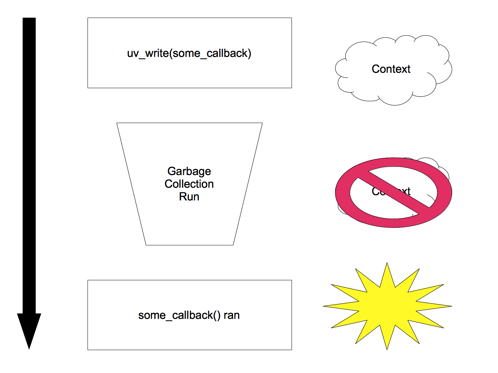

libuv - The Power Underneath Node.js
Brandon Philips
brandon@ifup.org
@brandonphilips
June 29th, 2012
Why I care about libuv
- I help maintain luvit
- I miss the Kernel
- Writing code that works across *nix sucks
Orientation
Major topics
- What is event driven non-blocking I/O?
- Why would you want to use it?
- Why libuv started?
- Example HTTP server
- Asyncing POSIX
- Building a platform on libuv
- Cross platform concerns
- Conclusion
Event driven non-blocking I/O
Basic idea
- Two types of events in the loop:
- I/O on file descriptors
- Timers for future events
- Callbacks are attached to these events
- epoll()/completion ports/kqueue() wait
- callback is called on the correct event
Event loop pseudo code
while (1) {
nfds = poll(fds, next_timer());
if (nfds == 0)
timer_callback();
for(n = 0; n < nfds; ++n) {
if (fds[n] == READY)
callbacks[n]();
}
}
Strategy Comparison time!
- Event Driven I/O Loop
- Threaded
- Multiple Processes
Event Driven I/O Loop
- Advantages
- No process level locking required
- Fast enough for I/O workloads
- Easy to understand by most developers
- Disadvantages
- CPU bound workload can block everything
- Scaling to multiple CPUs isn’t “free”
CPU bound work blocking everything example
function fib(n) {
if (n < 2)
return n;
return fib(n-1) + fib(n-2)
}
var http = require('http');
http.createServer(function (req, res) {
res.writeHead(200, {'Content-Type': 'text/plain'});
res.end(fib(40) + "\n");
}).listen(8080, '127.0.0.1');
console.log('Server running at http://127.0.0.1:8080/');
Threaded model
- Advantages
- CPU bound work doesn’t stop I/O
- Fans out naturally over multiple CPUs
- Disadvantages
- Harder to program correctly
- Debugging is hard
(impossible)
Process per request
- Advantages
- Simple model that everyone can understand
- Fans out naturally over multiple CPUs
- Disadvantages
- Harder to program correctly
- Debugging is hard
- Processes scale poorly
Conclusions
Back to libuv
The Short History of libuv
- First commit March 2011
- Microsoft helped port node to windows
- Appeared in node 0.5 and stable 0.6
Big list of features
- Non-blocking TCP sockets (using IOCP on Windows)
- Non-blocking named pipes
- UDP
- Timers
- Child process spawning
- Asynchronous DNS
- Asynchronous file system APIs uv_fs*
- High resolution time uv_hrtime
- Current executable path look up uv_exepath
- Thread pool scheduling uv_queue_work
Windows, Linux, OSX, BSD
Lets dive into some code
https://github.com/philips/libuv-webserver
Main
parser_settings.on_headers_complete = on_headers_complete;
resbuf.base = RESPONSE;
resbuf.len = sizeof(RESPONSE);
uv_loop = uv_default_loop();
uv_tcp_init(uv_loop, &server);
struct sockaddr_in address = uv_ip4_addr("0.0.0.0", 8000);
uv_tcp_bind(&server, address);
uv_listen((uv_stream_t*)&server, 128, on_connect);
printf("listening on port 8000\n");
uv_run(uv_loop);
on_connect
client_t* client = malloc(sizeof(client_t));
client->request_num = request_num;
uv_tcp_init(uv_loop, &client->handle);
http_parser_init(&client->parser, HTTP_REQUEST);
client->parser.data = client;
client->handle.data = client;
uv_accept(server_handle, (uv_stream_t*)&client->handle);
uv_read_start((uv_stream_t*)&client->handle, on_alloc, on_read);
on_read
size_t parsed;
client_t* client = (client_t*) tcp->data;
if (nread >= 0) {
parsed = http_parser_execute(
&client->parser, &parser_settings, buf.base, nread);
if (parsed < nread) {
LOG_ERROR("parse error");
uv_close((uv_handle_t*) &client->handle, on_close);
}
} else {
uv_err_t err = uv_last_error(uv_loop);
if (err.code != UV_EOF) {
UVERR(err, "read");
}
}
free(buf.base);
on_headers_complete
client_t* client = (client_t*) parser->data;
uv_write(
&client->write_req,
(uv_stream_t*)&client->handle,
&resbuf,
1,
after_write);
return 1;
How does it perform
- 256MB cloud machine running Linux
- HTTP Server Benchmark
- 20 simultaneous requests
- 20000 total requests
- Doing simple GET
- webserver - 0.8 MB - ~7800 requests/second
- luvit - 3.09 MB - ~4100 requests/second
- node - 51.99 MB - ~4900 requests/second
How to save that trouble
- Buy a faster computer
- Use node.js or luvit
var http = require('http');
http.createServer(function (req, res) {
res.writeHead(200, {'Content-Type': 'text/plain'});
res.end('Hello World\n');
}).listen(8000, '127.0.0.1');
console.log('Server running at http://127.0.0.1:8000/');
Asyncing POSIX
Async FS and DNS
- libeio for filesystem ops
- open/read/write/readdir not async
- uses a thread pool
- c-ares for dns
- gethostbyname/getaddrinfo not async
- implements dns on top of non-blocking sockets
Building a platform with libuv
The basics
- "No documentation"
- include/uv.h is good though
- Lots of well written tests too
- Interesting platforms built
- Great community at #libuv
What magic is in node that isn’t libuv
- TLS bindings
- crypto bindings
- http parser
- zlib bindings
- readline
- JSON
Trouble spots luvit has hit
Keeping refs through a callback
- Both node and luvit had this bug at some point


Ref counting is a bit odd
- uv_run() is a blocking call; exits when ref count is zero
- timers, like all objects, take a ref when created
- however this means that an inactive timer holds your app open
Having to bind to openssl
Conclusions
- libuv is awesome!
- event driven non-blocking I/O is useful
- understanding the underlying technology is important
Projects using libuv
Thanks! - contact me: brandon@ifup.org
ifup.org/slides

Source: Octodex